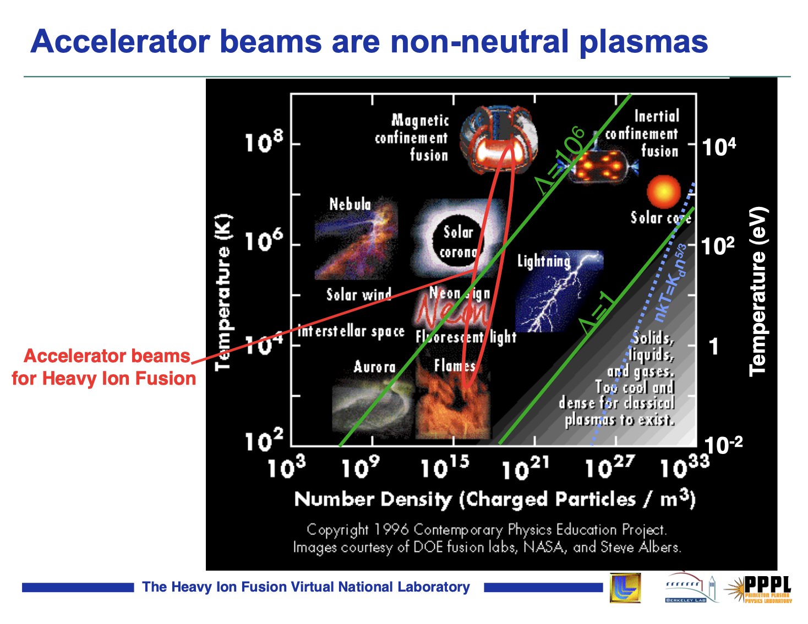
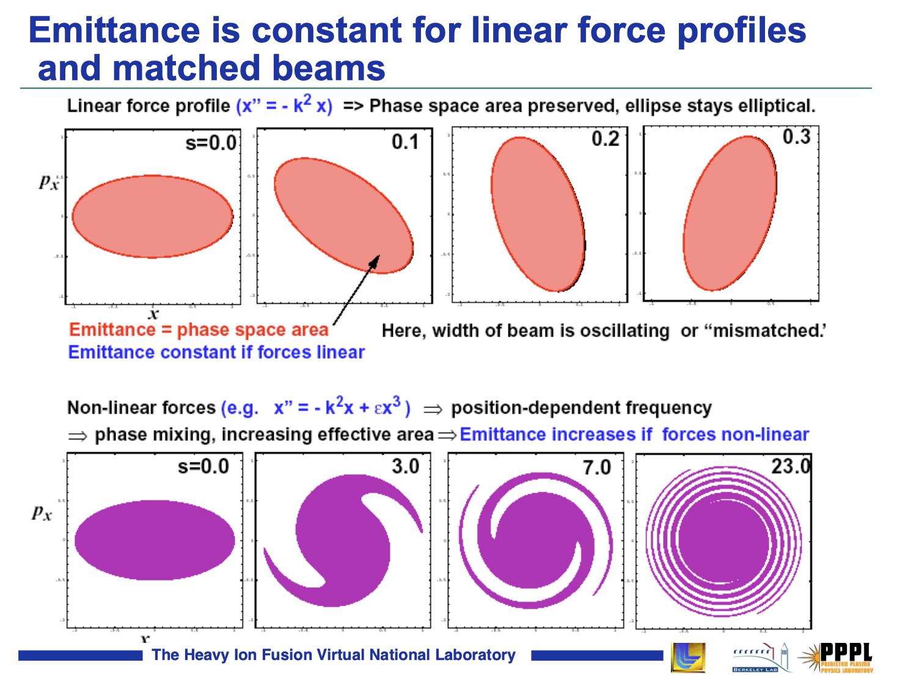

Plasma Physics of Beams
USPAS - Beam Physics with Intense Space Charge
We will adopt several concepts and techniques from the field of plasma physics to describe the behavior of intense charged particle beams. In this section, we introduce the kinetic theory of plasmas, a self-consistent treatment including both external and self-generated electromagnetic fields. [Comment on fluid treatment?] The endpoint will be the Vlasov-Poisson (V-P) equations, which provide a basis for the analysis in the rest of the course.
Useful quantities
We start by introducing several useful quantities: the Debye length, plasma parameter, and plasma frequency. These quantities are derived for neutral plasmas in thermal equilibrium, but they will also appear in the analysis of charged particle beams, i.e., non-neutral plasmas.
Debye length
Consider an infinite, uniform distribution of electrons and ions. A test particle of charge \(q_t\) and infinite mass is placed at the origin \(\mathbf{x} = 0\). We will study the effect of the test charge on the electric potential \(\phi(\mathbf{x})\). The Poisson equation relates the potential to the charge density:
\[ \nabla^2 \phi(\mathbf{x}) = -\frac{q \left( n_i(\mathbf{x}) - n_e(\mathbf{x}) \right) }{\epsilon_0} - \frac{q_t \delta(\mathbf{x}) }{\epsilon_0}, \tag{1}\]
where \(q\) is the elementary charge, \(\epsilon_0\) is the electric constant, \(n_e(\mathbf{x})\) is the electron density, \(n_i(\mathbf{x})\) is the ion density, and \(\delta\) is the Dirac delta function. We will assume that the ions maintain a uniform density \(n_i(\mathbf{x}) = n_0\) which is unaffected by the test charge. The electrons, on the other hand, will respond to the test charge and eventually relax to a thermal equilibrium at temperature \(T\), measured in units of energy (eV):
\[ n_e(\mathbf{x}) = n_0 \exp{ \left( \frac{q \phi(\mathbf{x})}{T} \right) } \tag{2}\]
where \(n_0\) is a constant representing the density far from the origin. If \(q \phi \ll T\), i.e., if the electrostatic energy is much less than the electron thermal energy, we may expand the exponential function as a power series and truncate it after a single term:
\[ n_e(\mathbf{x}) = n_0 \exp \left( \frac{q \phi(\mathbf{x})}{T} \right) \approx n_0 \left( 1 + \frac{q\phi(\mathbf{x})}{T} \right). \tag{3}\]
Inserting the constant ion density and truncated electron density into the Poisson equation gives the following equation to be solved for \(\phi(r)\), where \(r = |\mathbf{x}|\):
\[ \frac{1}{r^2} \frac{\partial }{\partial r} \left( r^2 \frac{\partial \phi}{\partial r} \right) = \left( \frac{q^2 n_0}{\epsilon_0 T} \right) \phi(r), \tag{4}\]
The solution is known as the Yukawa potential:
\[ \phi(r) = \frac{q_t}{4 \pi \epsilon_0 r} e^{-r/\lambda_D} = \phi_0(r) e^{-r/\lambda_D}, \]
where \(\lambda_D\) is the Debye length:
\[ \lambda_D = \sqrt{\frac{\epsilon_0 T}{n_0 q^2}}. \]
The Yukawa potential describes a bare point-charge potential \(\phi_0\) screened by an exponential function with characteristic length scale \(\lambda_D\). The exponential decay of the potential is known as Debye shielding or Debye screening.
Plasma parameter
For a collection of particles with average density \(n_0\), the average nearest-neighbor distance is given by \(n_0^{-1/3}\). The average potential energy between particles is given by
\[ \left| q\phi(\mathbf{x}) \right| \sim q^2 r^{-1} \sim q^2 n_0^{1/3}, \tag{5}\]
ignoring scaling factors. We will assume that the average kinetic energy \(T\) is much larger than the average nearest-neighbor potential energy:
\[ T \gg q^2 n_0^{1/3}. \tag{6}\]
This can be equivalently stated by defining the plasma parameter \(\Lambda\):
\[ \Lambda \equiv n_0 \lambda_D^3 \gg 1. \tag{7}\]
The plasma parameter defines the average number of particles within a Debye cube of volume \(\lambda_D^3\). We will assume Equation 7 is satisfied for all systems studied in this course. Systems for which the average nearest-neighbor potential energy is comparable to the average kinetic energy are labeled strongly coupled plasmas and will not be considered.
Plasma frequency
The plasma frequency \(\omega_p\) is derived by considering a one-dimensional slab of uniform density ions and electrons, constrained to the region \(0 \le x \le L\). Displacing the electrons by a small distance \(\Delta \ll L\) will create an electric field \(E(\Delta) = - n_0 q \Delta / \epsilon_0\). The resulting harmonic oscillations are described by
\[ \ddot{\Delta} + \omega^2 \Delta = 0, \tag{8}\]
where
\[ \omega_p \equiv \left( \frac{n_0 q^2}{\epsilon_0 m} \right)^{1/2}. \tag{9}\]
The relationship between the plasma frequency and Debye length defines the thermal velocity \(v_p\):
\[ v_p \equiv \omega_p \lambda_D = \left( \frac{T}{m} \right)^{1/2}. \tag{10}\]
The Debye length \(\lambda_D\), plasma frequency \(\omega_p\), and thermal velocity \(v_p\) define the characteristic length and time scales of collective oscillations.
Klimontovich Equation
Consider a set of \(N\) point-particles moving in the six-dimensional phase space defined by the position vector \(\mathbf{x} = (x, y, z)\) and momentum vector \(\mathbf{p} = (p_x, p_y, p_z)\). Let \(\left\{ \mathbf{X}_i(t) ,\mathbf{P}_i(t) \right\}\) be the coordinates of particle number \(i\) at time \(t\). For simplicity, we will only consider a single particle species with mass \(m\) and charge \(q\); the generalization to multiple species is straightforward. Let \(f^m(\mathbf{x}, \mathbf{p}, t)\) be the particle density at point \((\mathbf{x}, \mathbf{p})\) in the phase space at time \(t\):
\[ f^m(\mathbf{x}, \mathbf{p}, t) = \sum_{i=1}^{N} \delta \left[ \mathbf{x} - \mathbf{X}_i(t) \right] \delta \left[ \mathbf{p} - \mathbf{P}_i(t) \right], \tag{11}\]
where \(\delta\) is the Dirac delta function and \(m\) stands for microscopic, indicating a singular distribution function describing a set of point-particles, rather than a smooth density. The total number of particles is constant and is given by the integral of the density function over the phase space coordinates:
\[ N = \int f^m(\mathbf{x}, \mathbf{p}, t) d\mathbf{x} d\mathbf{p}. \tag{12}\]
The charge density \(\rho^m(\mathbf{x}, t)\) is given by:
\[ \begin{aligned} \rho^m(\mathbf{x}, t) &= \rho^0(\mathbf{x}, t) + q \int f^m(\mathbf{x}, \mathbf{p}, t) d\mathbf{p} \\ &= \rho^0(\mathbf{x}, t) + q \sum_{i=1}^{N} { \delta \left[ \mathbf{x} - \mathbf{X}_i(t) \right] }, \end{aligned} \tag{13}\]
where \(\rho^0(\mathbf{x}, t)\) is the charge density from external sources. Similarly, the current density \(\mathbf{J}^m(\mathbf{x}, t)\) is given by:
\[ \begin{aligned} \mathbf{J}^m(\mathbf{x}, t) &= \mathbf{J}^0(\mathbf{x}, t) + q \int \dot{\mathbf{x}} f^m(\mathbf{x}, \mathbf{p}, t) d\mathbf{p} \\ &= \mathbf{J}^0(\mathbf{x}, t) + q \sum_{i=1}^{N} { \dot{\mathbf{X}}_i(t) \delta \left[ \mathbf{x} - \mathbf{X}_i(t) \right] }, \end{aligned} \tag{14}\]
where \(\mathbf{J}^0(\mathbf{x}, t)\) is the current density from external sources. The charge and current densities generate an electric field \(\mathbf{E}^m(\mathbf{x}, t)\) and magnetic field \(\mathbf{B}^m(\mathbf{x}, t)\), which satisfy the Maxwell equations:
\[ \label{eq: micro_maxwell} \begin{aligned} \nabla \cdot \mathbf{E}^m(\mathbf{x}, t) &= \rho^m(\mathbf{x}, t) / \epsilon_0. \\ \nabla \cdot \mathbf{B}^m(\mathbf{x}, t) &= 0. \\ \nabla \times \mathbf{E}^m(\mathbf{x}, t) &= \partial_t \mathbf{B}^m(\mathbf{x}, t). \\ \nabla \times \mathbf{B}^m(\mathbf{x}, t) &= \mu_0 \mathbf{J}^m(\mathbf{x}, t) + \mu_0 \epsilon_0 \partial_t \mathbf{E}^m(\mathbf{x}, t), \end{aligned} \tag{15}\]
along with boundary conditions. Here \(\partial_t \equiv \partial / \partial t\) is the partial time derivative, \(\nabla \equiv \partial_{\mathbf{x}} \equiv (\partial_{x}, \partial_{y}, \partial_{z})\) is the spatial gradient, \(\varepsilon_0\) is the electric constant, and \(\mu_0\) is the magnetic constant. Given the fields and the particle trajectories, the force \(\mathbf{F}_i\) on particle \(i\) is given by:
\[ \begin{aligned} \mathbf{F}_i = \dot{\mathbf{P}}_i(t) = q \left( \mathbf{E}^{m} \left[ \mathbf{X}_i(t), t) \right] + \dot{\mathbf{X}}_i(t) \times \mathbf{B}^{m} \left[ \mathbf{X}_i(t), t \right] \right), \end{aligned} \tag{16}\]
where \(\dot{} \equiv d/dt\). Note that the momentum and velocity are related by
\[ \mathbf{P}_i(t) = \gamma_i m \dot{\mathbf{X}}_i(t), \tag{17}\]
where \(\gamma_i\) is the usual Lorentz factor:
\[ \gamma_i = \left[ 1 + \frac{|\mathbf{P}_i|^2}{(mc)^2} \right]^{1/2}. \tag{18}\]
We study the time-evolution of the microscopic distribution function:
\[ \begin{aligned} \partial_t f^m(\mathbf{x, \mathbf{p}, t}) &= \partial_t \left[ \sum_{i=1}^{N} \delta \left[ \mathbf{x} - \mathbf{X}_i(t) \right] \delta \left[ \mathbf{p} - \mathbf{P}_i(t) \right] \right] \\ &= - \sum_{i=1}^{N} \left[ \dot{\mathbf{X}_i}(t) \cdot \nabla{\mathbf{x}} + \dot{\mathbf{P}_i}(t) \cdot \nabla{\mathbf{p}} \right] \delta \left[ \mathbf{x} - \mathbf{X}_i(t) \right] \delta \left[ \mathbf{p} - \mathbf{P}_i(t) \right] \end{aligned} \tag{19}\]
Since \(a \delta(a - b) = b \delta(a - b)\), we can replace \(\mathbf{X}_i\) and \(\mathbf{P}_i\) with \(\mathbf{x}\) and \(\mathbf{p}\):
\[ \begin{aligned} \boxed{ \left\{ \partial_t + \dot{\mathbf{x}} \cdot \nabla{\mathbf{x}} + q \left[ \mathbf{E}^m(\mathbf{x}, t) + \dot{\mathbf{x}} \times \mathbf{B}^m(\mathbf{x}, t) \right] \cdot \nabla{\mathbf{p}} \right\} f^m(\mathbf{x}, \mathbf{p}, t) =0 } \end{aligned} \tag{20}\]
[I’m not quite know how to show this. It makes sense if \(a\) and \(b\) are functions, but in our case we have an operator acting on the delta function.] Equation 20 is known as the Klimontovich Equation.
Vlasov Equation
The Klimontovich equation, combined with the Maxwell equations, is an exact description of the \(N\)-particle system. However, this is more information than we need. We will proceed by calculating a smooth density function \(f(\mathbf{x}, \mathbf{p}, t)\) by averaging the microscopic density function \(f^m(\mathbf{x}, \mathbf{p}, t)\) over a box of dimensions \(\Delta_x\), \(\Delta_p\) in phase space:
\[ \begin{aligned} f(\mathbf{x}, \mathbf{p}, t) &= \langle f^m(\mathbf{x}, \mathbf{p}, t) \rangle \\ &= \frac{1}{\Delta_{x}^3 \Delta_{p}^3} \int_{\Delta_{\mathbf{x}}} \int_{\Delta_{\mathbf{p}}} f^m(\mathbf{x}, \mathbf{p}, t) d\mathbf{x} d\mathbf{p}. \end{aligned} \tag{21}\]
We assume that the spatial dimensions of the box are much smaller than the characteristic Debye length: \(n^{-1/3} \ll \Delta_{x} \ll \lambda_D\). We also assume the dimensions in momentum space are much smaller than the characteristic thermal momentum: \(0 \ll \Delta_{p} \ll mv_T\).
With the averaging procedure defined, we may split the distribution function into smooth and rapidly fluctuating components:
\[ f^m(\mathbf{x}, \mathbf{p}, t) = f(\mathbf{x}, \mathbf{p}, t) + \delta f(\mathbf{x}, \mathbf{p}, t) \tag{22}\]
The averaging procedure gives \(\langle \delta f \rangle = 0\). Similarly, we split the fields into smooth and fluctuating components
\[ \begin{aligned} \mathbf{E}^m(\mathbf{x}, t) &= \mathbf{E}(\mathbf{x}, t) + \delta \mathbf{E}(\mathbf{x}, t), \\ \mathbf{B}^m(\mathbf{x}, t) &= \mathbf{B}(\mathbf{x}, t) + \delta \mathbf{B}(\mathbf{x}, t), \end{aligned} \tag{23}\]
where \(\langle \delta \mathbf{E} \rangle = \langle \delta \mathbf{B} \rangle = 0\), \(\mathbf{E} = \langle \mathbf{E}^m \rangle\), and $ = ^m $. The course-grained Klimontovich equation gives:
\[ \begin{multline} \left[ \partial_{t} + \dot{\mathbf{x}} \cdot \nabla{\mathbf{x}} + q \left[ \mathbf{E}(\mathbf{x}, t) + \dot{\mathbf{x}} \times \mathbf{B}(\mathbf{x}, t) \right] \cdot \nabla{\mathbf{p}} \right] f(\mathbf{x}, \mathbf{p}, t) = \\ -q \left\langle \left[ \delta\mathbf{E}(\mathbf{x}, t) + \dot{\mathbf{x}} \times \delta\mathbf{B}(\mathbf{x}, t) \right] \right \rangle \end{multline} \tag{24}\]
The left side of Equation 24 describes collective effects involving smoothly varying quantities, while the right side describes collisional effects involving rapidly varying quantities. The importance of collisional effects may be estimated using classical scattering theory. This is not described in any detail here. A rough estimate is obtained by defining a collisional cross section \(\sigma\) and collision frequency \(\omega_c = \sigma n v_t\). The ratio between the collision frequency \(\omega_c\) and plasma frequency \(\omega_p\) gives the approximate relation:
\[ \frac{\text{Collisional effects}}{\text{Collective effects}} \sim \frac{1}{\Lambda}. \tag{25}\]
Recall that the plasma parameter \(\Lambda\) is the typical number of particles within a Debye cube, which is a large number for weakly coupled plasmas. More detailed estimates can be found in . [Do we need to include a more detailed estimate of collisional effects and when to ignore them? We do have a lecture at the end of the course that focused on scattering.]
Setting the collisional terms Equation 24 to zero gives the Vlasov Equation:
\[ \boxed{ \left[ \partial_{t} + \dot{\mathbf{x}} \cdot \nabla{\mathbf{x}} + q \left[ \mathbf{E}(\mathbf{x}, t) + \dot{\mathbf{x}} \times \mathbf{B}(\mathbf{x}, t) \right] \cdot \nabla{\mathbf{p}} \right] f(\mathbf{x}, \mathbf{p}, t) = 0 } \tag{26}\]
The smoothed fields satisfy the Maxwell equations:
\[ \begin{aligned} \nabla \cdot \mathbf{E}(\mathbf{x}, t) &= \rho(\mathbf{x}, t) / \epsilon_0, \\ \nabla \cdot \mathbf{B}(\mathbf{x}, t) &= 0, \\ \nabla \times \mathbf{E}(\mathbf{x}, t) &= \partial_t \mathbf{B}(\mathbf{x}, t), \\ \nabla \times \mathbf{B}(\mathbf{x}, t) &= \mu_0 \mathbf{J}(\mathbf{x}, t) + \mu_0 \epsilon_0 \partial_t \mathbf{E}(\mathbf{x}, t), \end{aligned} \tag{27}\]
where \(\rho(\mathbf{x}, t)\) and \(\mathbf{J}(\mathbf{x}, t)\) are the smoothed charge and current densities:
\[\begin{align} \rho(\mathbf{x}, t) &= \rho^0(\mathbf{x}, t) + q \int f(\mathbf{x}, \mathbf{p}, t) d\mathbf{p} \\ \mathbf{J}(\mathbf{x}, t) &= \mathbf{J}^0(\mathbf{x}, t) + q \int \dot{\mathbf{x}} f(\mathbf{x}, \mathbf{p}, t) d\mathbf{p}. \end{align}\]
[Note on when to go from Vlasov-Maxwell to Vlasov-Poisson?]
Consequences of Vlasov equation
Liouville Theorem
The Vlasov equation will be the starting point for much of the analysis in the rest of this course. Before proceeding, we will briefly discuss one of its important features: the conservation of phase space density. The Vlasov equation may be viewed as an expression of the Liouville Theorem, which states that the phase space density is conserved along particle trajectories (orbits) in Hamiltonian systems:
\[ \frac{df}{dt} \bigg\rvert_{\text{orbit}} = 0. \tag{28}\]
To show this, start from the continuity equation for the phase space density:
\[ \partial_{t} f + \nabla{\mathbf{z}} (f \dot{\mathbf{z}}) = 0, \tag{29}\]
with \(\mathbf{z} = (\mathbf{q}, \mathbf{p})\) containing the canonical coordinate vector \(\mathbf{q}\) and momentum \(\mathbf{p}\). Given a Hamiltonian \(H(\mathbf{q}, \mathbf{p}, t)\), the coordinates evolve according to
\[ \begin{aligned} \dot{\mathbf{q}} &= +\nabla{\mathbf{p}} H, \\ \dot{\mathbf{p}} &= -\nabla{\mathbf{q}} H. \end{aligned} \tag{30}\]
Thus, the divergence of \(\dot{\mathbf{z}}\) vanishes:
\[ \begin{aligned} \nabla{\mathbf{z}} \cdot \dot{\mathbf{z}} &= \nabla{\mathbf{q}} \cdot \dot{\mathbf{q}} + \nabla{\mathbf{p}} \cdot \dot{\mathbf{p}} \\ &= \left[ \nabla{\mathbf{q}} \cdot \nabla{\mathbf{p}} - \nabla{\mathbf{p}} \cdot \nabla{\mathbf{q}} \right] H \\ &= 0. \end{aligned} \tag{31}\]
And the continuity equation reduces to the time derivative along the orbit:
\[ \begin{aligned} \partial_{t} f + \nabla{\mathbf{z}} (f \dot{\mathbf{z}}) &= 0, \\ \partial_{t} f + \dot{\mathbf{z}} \cdot (\nabla{\mathbf{z}} f) + (\nabla{\mathbf{z}} \cdot \dot{\mathbf{z}}) f &= 0, \\ \partial_{t} f + \dot{\mathbf{z}} \cdot (\nabla{\mathbf{z}} f) &= 0, \\ \frac{df}{dt} \bigg\rvert_{\text{orbit}} &= 0. \end{aligned} \tag{32}\]
Liouville’s theorem is true for any set of canonical phase space variables. It also remains true when mean-field (averaged) collective effects are included. In canonical phase space coordinates, the Vlasov equation takes the form:
\[ \begin{aligned} \frac{\partial f}{\partial t} + \frac{\partial H}{\partial \mathbf{p}} \cdot \frac{\partial f}{\partial \mathbf{q}} - \frac{\partial H}{\partial \mathbf{q}} \cdot \frac{\partial f}{\partial \mathbf{p}} = 0. \end{aligned} \tag{33}\]
Or, defining the Poisson bracket,
\[ \left\{ H, f \right\} \equiv \frac{\partial H}{\partial \mathbf{p}} \cdot \frac{\partial f}{\partial \mathbf{q}} - \frac{\partial H}{\partial \mathbf{q}} \cdot \frac{\partial f}{\partial \mathbf{p}}, \tag{34}\]
the Vlasov equation becomes:
\[ \frac{\partial f}{\partial t} + \left\{ H, f \right\} = 0. \tag{35}\]
Non-Hamiltonian processes (such as scattering) violate the Liouville Theorem and do not conserve phase space density.
Statistical measures of phase space volume
It will later be useful to describe the phase space density by its low-order moments. The most common quantity used in accelerator physics is the statistical emittance. Emittances are calculated from the second-order moments in the covariance matrix \(\mathbf{\Sigma}\):
\[ \mathbf{\Sigma} = \int \mathbf{z} \mathbf{z}^T f(\mathbf{z}) d\mathbf{z}. \tag{36}\]
For example, with \(\mathbf{z} = (x, p_x, y, p_y, z, p_z)\),
\[ \mathbf{\Sigma} = \begin{bmatrix} \langle x x \rangle & \langle x p_x \rangle & \langle x y \rangle & \langle x p_y \rangle & \langle x z \rangle & \langle x p_z \rangle \\ \langle p_x x \rangle & \langle p_x p_x \rangle & \langle p_x y \rangle & \langle p_x p_y \rangle & \langle p_x z \rangle & \langle p_x p_z \rangle \\ \langle y x \rangle & \langle y p_x \rangle & \langle y y \rangle & \langle y p_y \rangle & \langle y z \rangle & \langle y p_z \rangle \\ \langle p_y x \rangle & \langle p_y p_x \rangle & \langle p_y y \rangle & \langle p_y p_y \rangle & \langle p_y z \rangle & \langle p_y p_z \rangle \\ \langle z x \rangle & \langle z p_x \rangle & \langle z y \rangle & \langle z p_y \rangle & \langle z z \rangle & \langle z p_z \rangle \\ \langle p_z x \rangle & \langle p_z p_x \rangle & \langle p_z y \rangle & \langle p_z p_y \rangle & \langle p_z z \rangle & \langle p_z p_z \rangle \end{bmatrix}. \tag{37}\]
For a phase space of dimension \(K\), the \(K\)-dimensional emittance \(\varepsilon\) is the square root of the determinant of the covariance matrix.
\[ \varepsilon = \sqrt{ \det{\mathbf{\Sigma}} }. \tag{38}\]
The emittance is the volume of an ellipsoid defined by the covariance matrix. It is conserved under linear symplectic transformations. The \(K\)-dimensional emittance may be written as the product of the intrinsic emittances \(\varepsilon_1, \dots, \varepsilon_K\):
\[ \varepsilon = \prod_{k = 1}^{K} \varepsilon_k, \tag{39}\]
defined by the following eigenvalue problem:
\[ \det(\mathbf{\Sigma} \mathbf{U} - i\varepsilon_k \mathbf{I}) = 0, \tag{40}\]
where \(\mathbf{U}\) is the Poisson matrix . The intrinsic emittances are individually conserved under any symplectic linear transformation. If the covariance matrix takes the following block-diagonal form
\[ \mathbf{\Sigma} = \begin{bmatrix} \mathbf{\Sigma}_{xx} & 0 & 0 \\ 0 & \mathbf{\Sigma}_{yy} & 0 \\ 0 & 0 & \mathbf{\Sigma}_{zz} \end{bmatrix}, \tag{41}\]
the intrinsic emittances reduce the projected emittances \(\varepsilon_x\), \(\varepsilon_y\), \(\varepsilon_z\):
\[ \begin{aligned} \varepsilon_x &= \sqrt{ \det{ \mathbf{\Sigma}_{xx} }}, \\ \varepsilon_y &= \sqrt{ \det{ \mathbf{\Sigma}_{yy} }}, \\ \varepsilon_z &= \sqrt{ \det{ \mathbf{\Sigma}_{zz} }}. \\ \end{aligned} \tag{42}\]
The projected emittances are conserved only for uncoupled symplectic linear transformations. The Vlasov evolution does not necessarily conserve statistical quantities such as the emittances. In general, nonlinear forces will tend to increase the emittances, as shown in Figure 1.

